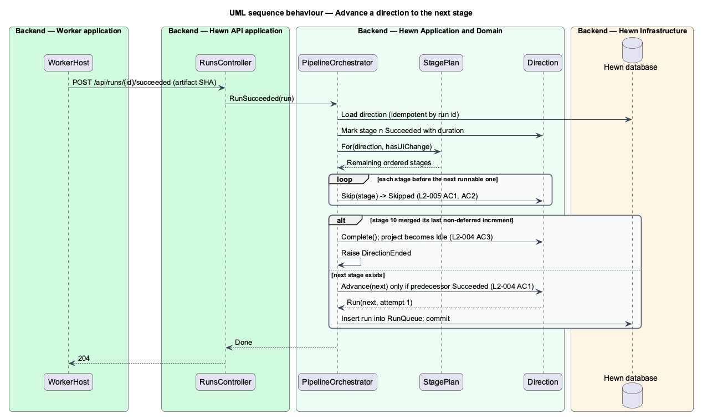
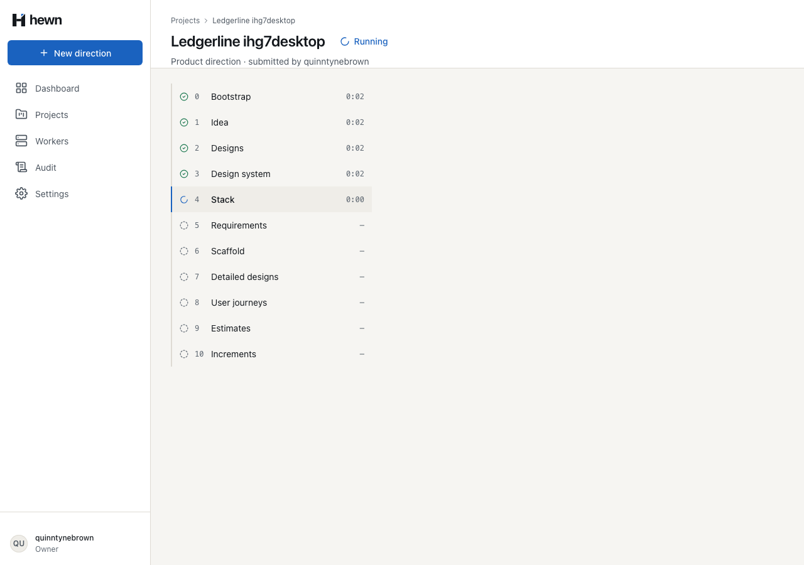
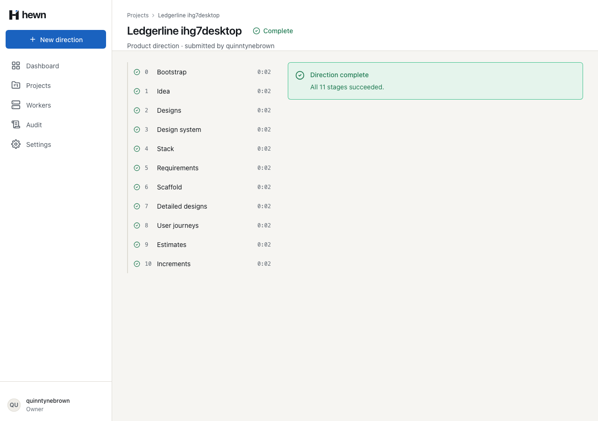
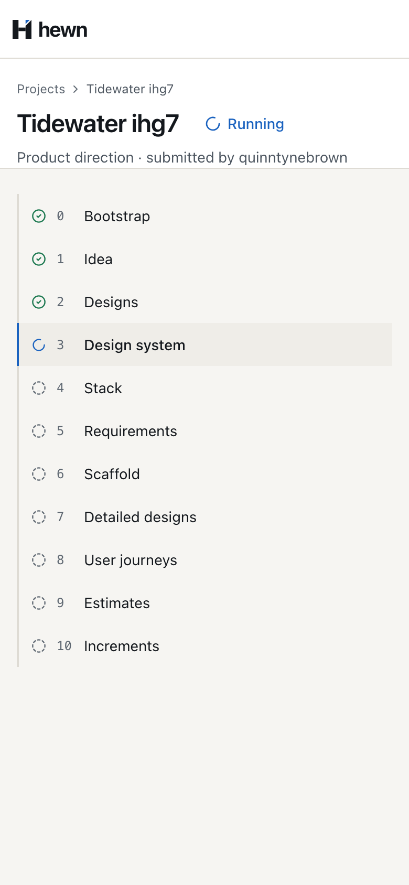
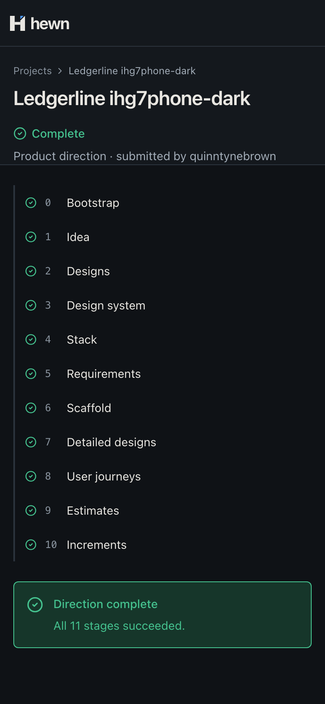
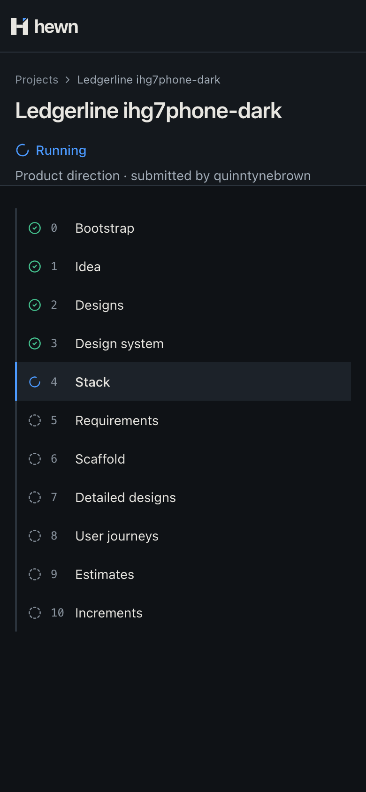

A worker leases each stage, 0 to 10, in order. Mission Control follows live until the direction is Complete.
No agent, model or GitHub call: deterministic tests and demos. Real stages replace it one at a time.

var granted = await db.Runs
.Where(r => r.Id == candidate.Id && r.Status == RunStatus.Queued)
.Where(r => !db.Runs.Any(o => o.ProjectId == candidate.ProjectId && o.Status == RunStatus.Leased))
.ExecuteUpdateAsync(set => set
.SetProperty(r => r.Status, RunStatus.Leased)
.SetProperty(r => r.WorkerId, workerId)
.SetProperty(r => r.LeaseEpoch, r => r.LeaseEpoch + 1)
.SetProperty(r => r.LeaseExpiresAt, expires),
cancellationToken);
Zero rows changed means another worker won. A stale epoch gets 409 lease_lost.
const steps = this.executor.plan(run);
for (let index = run.checkpointStep; index < steps.length; index++) {
await steps[index]!.execute(lease.signal);
if (lease.signal.aborted) return;
await this.api.checkpoint(workerId, run, index + 1);
}
if (lease.signal.aborted) return;
await this.api.result(workerId, run, { outcome: 'Succeeded' });
Heartbeat every 10 s; a 409 or two missed heartbeats abort the lease signal.
this.api.getProject(id).pipe(
switchMap((snapshot) =>
this.events.follow(id, snapshot.lastSequence).pipe(
scan((acc, event) => ({ project: applyEvent(acc.project, event), event }), { project: snapshot, event: null }),
),
),
)
Order, one lease per project, expiry, stale epochs, live events
Fake API and fake timers: heartbeats, polling, resume
Real workers run a direction live to Complete; axe clean




